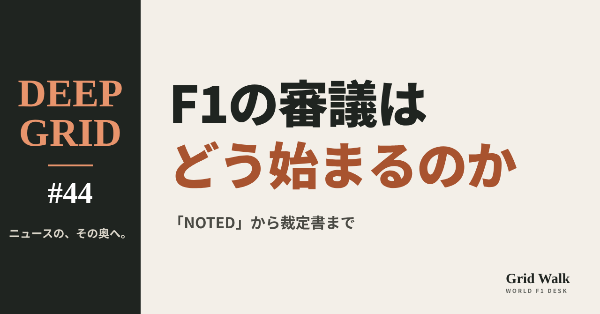
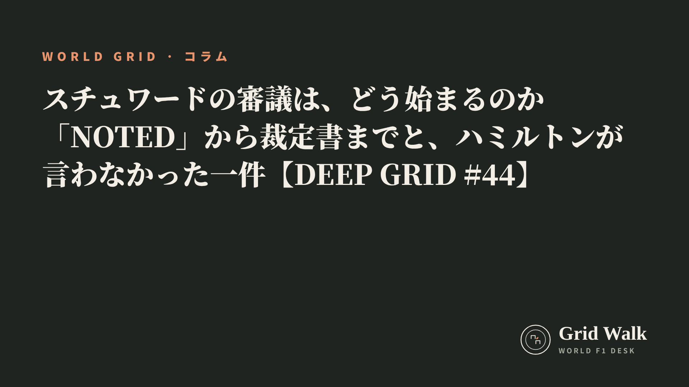

<meta charset="utf-8"><title>DEEP GRID #44 note貼り付け</title>
<style>
/* one column of numbered paste steps; text steps vs image steps differ by marker */
:root{--bg:#F5F4F0;--card:#FFFFFF;--ink:#1D2321;--mute:#5F665F;--line:#DCDAD2;--btn:#1F5FBF;--btnok:#2E8B4F;--img:#E9F3EC;--imgink:#22663B;--sans:'IBM Plex Sans JP','Hiragino Sans','Noto Sans JP',sans-serif}
@media (prefers-color-scheme:dark){:root:not([data-theme="light"]){--bg:#171A19;--card:#202423;--ink:#ECEDE8;--mute:#A3AAA2;--line:#343937;--btn:#4D8BE6;--btnok:#3FA866;--img:#1E2C23;--imgink:#8FD3A6;color-scheme:dark}}
:root[data-theme="dark"]{--bg:#171A19;--card:#202423;--ink:#ECEDE8;--mute:#A3AAA2;--line:#343937;--btn:#4D8BE6;--btnok:#3FA866;--img:#1E2C23;--imgink:#8FD3A6;color-scheme:dark}
body{background:var(--bg);color:var(--ink);font-family:var(--sans);font-size:15px;line-height:1.75;padding:20px 16px 60px}
main{max-width:680px;margin:0 auto;display:grid;gap:28px}
header h1{font-size:22px;margin:0 0 6px;text-wrap:balance}
header p{margin:0;color:var(--mute);font-size:14px}
nav{display:flex;gap:8px;flex-wrap:wrap;margin-top:12px}
nav a{border:1px solid var(--line);border-radius:999px;padding:4px 14px;color:var(--ink);text-decoration:none;font-size:14px;background:var(--card)}
.part h2{font-size:18px;line-height:1.5;margin:0 0 12px;text-wrap:balance;display:flex;gap:10px;align-items:baseline;flex-wrap:wrap}
.tag{font-size:13px;background:var(--ink);color:var(--bg);border-radius:6px;padding:1px 9px}
.steps{list-style:none;margin:0;padding:0;display:grid;gap:12px}
.st{background:var(--card);border:1px solid var(--line);border-radius:12px;padding:12px;min-width:0}
.hd{display:flex;align-items:center;gap:8px;margin-bottom:8px}
.no{width:26px;height:26px;border-radius:50%;background:var(--btn);color:#fff;display:inline-flex;align-items:center;justify-content:center;font-size:13px;font-weight:700;flex:0 0 26px}
.im .no{background:var(--btnok)}
.hd em{font-style:normal;font-size:12px;background:var(--img);color:var(--imgink);border-radius:6px;padding:0 8px}
.bx{font-size:13.5px;line-height:1.7;border:1px solid var(--line);border-radius:8px;padding:8px 10px;max-height:110px;overflow:auto;overflow-wrap:anywhere}
.bx.tall{max-height:150px}.bx p{margin:0 0 6px}.bx h2{font-size:14px;margin:8px 0 4px}.bx a{color:var(--btn)}
.st img{display:block;width:100%;max-width:100%;border:1px solid var(--line);border-radius:8px}
.sub{font-size:12.5px;color:var(--mute);margin:6px 0 0}
.cp{width:100%;margin-top:8px;padding:12px;border:0;border-radius:10px;background:var(--btn);color:#fff;font:600 15px var(--sans);cursor:pointer}
.cp.ok{background:var(--btnok)}.cp.dl{background:var(--btnok)}.cp:focus-visible{outline:3px solid var(--ink);outline-offset:2px}
.xh{font-size:15px;margin:20px 0 10px}
.fb{font-size:13px;line-height:1.7;margin:8px 0 0;padding:8px 10px;border-radius:8px;background:var(--img);color:var(--imgink)}
.opts{display:grid;grid-template-columns:repeat(auto-fill,minmax(240px,1fr));gap:10px}
.opt{min-width:0}.opt img{display:block;width:100%;border:1px solid var(--line);border-radius:8px}
.ol{display:flex;align-items:center;gap:8px;margin-top:6px}.ol b{font-size:13px;flex:0 0 auto}.ol .on{font-size:12.5px;color:var(--mute);flex:1;min-width:0}.ol .cp{width:auto;flex:0 0 auto;padding:9px 14px}.ol .cp{margin:0;padding:9px}
.toast{font-size:13px;color:var(--mute);margin-top:6px}
</style>
<main><header><h1>DEEP GRID #44 note貼り付け</h1><p>1本あります。青い番号は文章、緑は画像です。</p><nav><a href="#p1">#44</a></nav></header><section class="part" id="p1"><h2><span class="tag">DEEP GRID #44</span>スチュワードの審議は、どう始まるのか　「NOTED」から裁定書までと、ハミルトンが言わなかった一件【DEEP GRID #44】</h2><ol class="steps">
<li class="st im"><div class="hd"><span class="no">1</span><b>見出し画像</b><em>画像</em></div><button class="cp dl" data-img="img/stewards-how-investigations-start.png" data-name="deep-stewards-how-investigations-start_見出し画像.png">ダウンロード</button></li>
<li class="st"><div class="hd"><span class="no">2</span><b>タイトル</b></div><div class="bx" id="p1t">スチュワードの審議は、どう始まるのか　「NOTED」から裁定書までと、ハミルトンが言わなかった一件【DEEP GRID #44】</div><button class="cp" data-plain="p1t">タイトルをコピー</button></li>
<li class="st"><div class="hd"><span class="no">3</span><b>本文</b></div><div class="bx tall" id="p1r"><p>中継の画面に「NOTED」と出ても、それはまだ審議ではない。誰かが出来事をスチュワードの机に載せ、スチュワードが「調べる」と決めて、はじめて審議が始まる。ルイス・ハミルトンは、メキシコの走行セッションでアイザック・ハジャーに邪魔された件を、あえて口にしなかったと明かした。審議の入口はどこにいくつあるのか、画面のメッセージは何を意味するのか、召喚から文書までの流れを、FIAの規則と大会の文書から読む。</p><p>データの表と、出典20件はサイトで → <a href="https://f1gridwalk.github.io/deep/stewards-how-investigations-start/?utm_source=note&amp;utm_campaign=stewards-how-investigations-start">https://f1gridwalk.github.io/deep/stewards-how-investigations-start/?utm_source=note&amp;utm_campaign=stewards-how-investigations-start</a></p><h2>先に結論</h2><p>① スチュワードの審議には、入口がいくつかある。規則に書かれているのは、レースディレクターからの報告と、スチュワードが自分たちで気づいた出来事だ。メキシコシティGPでは、技術代表やメディア担当の報告から始まった件もあった。ただ、どの入口から来ても、調べるかどうかを決めるのはスチュワードだ。</p><p>② 中継に出る「NOTED（記録した）」は、出来事が報告されたという段階にすぎない。2026年のマイアミGPの決勝では、NOTEDが14件出た。そのうち4件は数分で「それ以上は調べない」となり、10件が審議に進んだ。レース中に罰まで出たのは1件、措置なしが3件で、6件はレース後に持ち越された。</p><p>③ 審議が決まると、関係するドライバーが全チームに知らされる。決勝やスプリントの終了の合図から60分以内に知らせが出れば、そのドライバーはスチュワードの許しなしにサーキットを離れられない。話を聞く必要があれば、時刻と場所を書いた「召喚」の文書が出て、聴取のあとに裁定書が出る。</p><p>④ ハミルトンは、メキシコの走行セッションでハジャーに邪魔された件を、あえて無線で言わなかったと話した。言っていればハジャーは罰を受けただろう、という。独Motorsport-Total.comは、無線がいまはAIの道具でその場で文字に起こされ、ドライバーが口にした出来事は探しやすくなっていると説明している。ただし、今季のスチュワードの決定によれば、練習走行の走行妨害は、危険か意図的でなければ「警告」が通常の罰だ。</p><p>⑤ チームの「抗議」と「再審査」は、同じ「不服」でも中身が違う。抗議は、チームが他チームの車や結果の問題をスチュワードに持ち込む、審議の入口の一つだ。再審査は、スチュワードがすでに出した裁定を、新しい要素をもとにやり直させる手続きだ。</p><p><strong>レース中に「NOTED」の表示を見て、どうなるのか気になったことはありますか？</strong></p><h2>続きは F1 Grid Walk で</h2><p>ここから先の「審議の入口は、いくつあるのか」「画面の文字で追う：マイアミ決勝の14件」「召喚、聴取、そして文書へ」「ドライバーの無線と、「言わない」という選択」「抗議と再審査は、どこが違うのか」は、サイトで読めます。マイアミGP決勝、NOTEDになった14件のその後（レースコントロールのメッセージ）、審議の入口（2026年メキシコシティGPの文書の例）、審議の流れにかかわる条文、練習走行での走行妨害・接触の扱い（例）の表も載せています。</p><p><strong>DEEP GRID #44「スチュワードの審議は、どう始まるのか　「NOTED」から裁定書までと、ハミルトンが言わなかった一件」</strong></p><p><a href="https://f1gridwalk.github.io/deep/stewards-how-investigations-start/">https://f1gridwalk.github.io/deep/stewards-how-investigations-start/</a></p><p>━━━━━━━━━━</p><p><strong>F1 Grid Walk では、世界のF1ニュースを毎日日本語でまとめています。</strong></p><p>海外の記事の要約を、毎日載せています。</p><p>ほかの海外記事も読みたい方は、F1 Grid Walkへ。</p><p><a href="https://f1gridwalk.github.io/">https://f1gridwalk.github.io/</a></p><p>━━━━━━━━━━</p><p><a href="https://www.motorsport-total.com/formel-1/news/lewis-hamilton-verraet-so-bewahrte-er-isack-hadjar-vor-einer-strafe-26110520">出典：Motorsport-Total.com</a></p><p><a href="https://www.fia.com/system/files/documents/fia_2026_f1_regulations_-_section_b_sporting_-_iss_09_-_2026-10-01.pdf">出典：FIA</a></p><p><a href="https://api.fia.com/system/files/documents/fia_2026_f1_regulations_-_section_a_general_provisions_-_iss_03_-_2026-06-25.pdf">出典：FIA</a></p><p><a href="https://api.fia.com/system/files/documents/2026_international_sporting_code_fr-en_marked_up_version_25.06.2026.pdf">出典：FIA</a></p><p><a href="https://www.fia.com/sites/default/files/2026_04_usa_f1_r0_timing_raceracecontrolmessages_v01.pdf">出典：FIA</a></p><p><a href="https://www.fia.com/sites/default/files/2026_04_usa_f1_p1_timing_firstpracticesessionracecontrolmessages_v01.pdf">出典：FIA</a></p><p><a href="https://www.fia.com/system/files/decision-document/2026_mexico_city_grand_prix_-_new_pu_elements_for_this_competition.pdf">出典：FIA</a></p><p><a href="https://www.fia.com/system/files/decision-document/2026_mexico_city_grand_prix_-_infringement_-_car_77_-_pu_elements.pdf">出典：FIA</a></p><p><a href="https://www.fia.com/system/files/decision-document/2026_mexico_city_grand_prix_-_infringement_-_car_6_-_misconduct.pdf">出典：FIA</a></p><p><a href="https://www.fia.com/system/files/decision-document/2026_mexico_city_grand_prix_-_provisional_starting_grid.pdf">出典：FIA</a></p><p><a href="https://www.fia.com/system/files/decision-document/2026_mexico_city_grand_prix_-_infringement_-_car_63_-_failure_to_attend_mandatory_post-race_commitments.pdf">出典：FIA</a></p><p><a href="https://www.fia.com/system/files/decision-document/2026_mexico_city_grand_prix_-_infringement_-_car_10_-_failing_to_slow_under_yellow_flags.pdf">出典：FIA</a></p><p><a href="https://www.fia.com/system/files/decision-document/2026_mexico_city_grand_prix_-_infringement_-_car_43_-_failing_to_slow_under_yellow_flags.pdf">出典：FIA</a></p><p><a href="https://www.fia.com/sites/default/files/decision-document/2024%20Saudi%20Arabian%20Grand%20Prix%20-%20Summons%20-%20Car%2044%20-%20Alleged%20Impeding%20of%20Car%202.pdf">出典：FIA</a></p><p><a href="https://www.the-race.com/formula-1/f1-race-control-remote-operations-stewards-fia-evolution/">出典：The Race</a></p><p><a href="https://www.autosport.com/f1/news/mission-control-inside-the-fia-and-f1s-latest-answer-to-footballs-var/10866997/">出典：Autosport</a></p><p><a href="https://www.crash.net/f1/news/1105250/1/lewis-hamilton-learns-verdict-after-azerbaijan-gp-impeding-investigation">出典：Crash.net</a></p><p><a href="https://www.motorsport.com/f1/news/lewis-hamilton-fp2-block-alexander-albon/10714708/">出典：Motorsport.com</a></p><p><a href="https://www.the-race.com/formula-1/verstappen-and-lawson-get-grid-drops-for-clumsy-mexico-clash/">出典：The Race</a></p><p><a href="https://www.the-race.com/formula-1/f1-plans-changes-to-deter-frivolous-protests">出典：The Race</a></p></div><button class="cp" data-rich="p1r">本文をコピー</button></li>
<li class="st"><div class="hd"><span class="no">4</span><b>ハッシュタグ</b></div><div class="bx" id="p1h">#F1 #F1jp #スチュワード #ペナルティ #FIA #ハミルトン #ハジャー #F1のルール #DEEPGRID</div><button class="cp" data-plain="p1h">タグをコピー</button></li>
</ol><h3 class="xh">X</h3><ol class="steps">
<li class="st im"><div class="hd"><b>X用の画像</b><em>画像</em></div><button class="cp dl" data-img="img/x_stewards-how-investigations-start.png" data-name="x_deep-stewards-how-investigations-start.png">ダウンロード</button></li>
<li class="st"><div class="hd"><b>① noteをシェアするときの文</b></div><div class="bx" id="p1x0">中継の「NOTED」は、まだ審議ではありません。マイアミGPの決勝ではNOTEDが14件、審議に進んだのは10件。審議の入口から裁定書までを、FIAの規則と大会の文書で読みました。DEEP GRID #44 #F1jp</div><button class="cp" data-plain="p1x0">コピー</button></li>
<li class="st"><div class="hd"><b>② ①への返信</b></div><div class="bx" id="p1x1">ほかの海外記事も読みたい方は、F1 Grid Walkへ。
https://f1gridwalk.github.io/deep/stewards-how-investigations-start/?utm_source=x&amp;utm_campaign=stewards-how-investigations-start</div><button class="cp" data-plain="p1x1">コピー</button></li>
<li class="st"><div class="hd"><b>③ ②への返信</b></div><div class="bx" id="p1x2">毎日の海外F1ニュースは、日本語でこちらにまとめています。
https://f1gridwalk.github.io/</div><button class="cp" data-plain="p1x2">コピー</button></li>
</ol></section></main><script>
function done(b,msg){const t=b.dataset.t||b.textContent;b.dataset.t=t;b.classList.add('ok');b.textContent=msg||'コピーしました';setTimeout(()=>{b.classList.remove('ok');b.textContent=t},2000)}
function selectEl(el){const r=document.createRange();r.selectNodeContents(el);const s=getSelection();s.removeAllRanges();s.addRange(r)}
async function rich(el,b){
  try{await navigator.clipboard.write([new ClipboardItem({'text/html':new Blob([el.innerHTML],{type:'text/html'}),'text/plain':new Blob([el.innerText],{type:'text/plain'})})]);done(b);return}catch(e){}
  selectEl(el);let ok=false;try{ok=document.execCommand('copy')}catch(e){}
  if(ok){getSelection().removeAllRanges();done(b)}else{done(b,'選択しました。コピーしてください')}}
async function plain(el,b){
  try{await navigator.clipboard.writeText(el.innerText);done(b);return}catch(e){}
  selectEl(el);let ok=false;try{ok=document.execCommand('copy')}catch(e){}
  if(ok){getSelection().removeAllRanges();done(b)}else{done(b,'選択しました。コピーしてください')}}
let dlns=null;(async()=>{try{dlns=await window.claude?.use?.("downloads")}catch(e){dlns=null}})();
async function img(src,b){
  b.dataset.t=b.dataset.t||b.textContent;
  if(!dlns){try{dlns=await window.claude?.use?.("downloads")}catch(e){}}
  if(!dlns){b.textContent='ダウンロードできませんでした';setTimeout(()=>{b.textContent=b.dataset.t},3500);return}
  try{const blob=await fetch(src).then(r=>r.blob());b.textContent='保存の確認を開いています…';
    await dlns.save({filename:b.dataset.name,data:blob});done(b,'ダウンロードしました')}
  catch(e){const c=e&&e.code;b.textContent=c==='declined'?'キャンセルしました':c==='rate_limited'?'少し待ってからもう一度押してください':'ダウンロードできませんでした';setTimeout(()=>{b.textContent=b.dataset.t},3500)}}
document.querySelectorAll('.cp').forEach(b=>b.addEventListener('click',()=>{
  if(b.dataset.rich)rich(document.getElementById(b.dataset.rich),b);
  else if(b.dataset.plain)plain(document.getElementById(b.dataset.plain),b);
  else img(b.dataset.img,b)}));
</script>